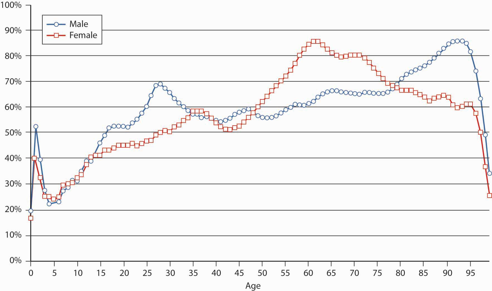

In this section we elaborate on the risk of a premature death:
Our lives involve uncertainties and risks. Sometimes, the uncertainty relates to the question of whether an event will occur (What if I become disabled? Will I reach retirement age?). In other cases, an event, such as death, will definitely occur; therefore, the risk relates to the timing of the event (all people will die, but we don’t know when). The risk management of individuals is strongly related to mortality because it determines the probabilities of dying and surviving. It is also related to words and concepts like life expectancy and to the measurement of the financial threats created by the life cycle risks. In the following section, we shall further explore the topic of mortality riskLife cycle risk of premature death.: the risk of premature death.
Speaking in terms of the financial threats and ignoring the very real psychological and emotional elements, we can say that the financial risk of a premature death is mainly borne by the dependents of the deceased person because they relied on the income stream generated by the deceased. The risk of old age is mainly borne by the person whose life is being assessed—that is, the need to guarantee the livelihood of that person. The cut-off point to distinguish between a premature death and old age depends on the particular person and family. We shall arbitrarily take a common retirement age, say, sixty-five, as the borderline.
The distinction between different effects of mortality risk was made at the beginning of the twentieth century. Human beings, like machines, were assessed according to their ability to contribute to the economy. A machine is expected to operate during its economic lifetime; it may, however, break down before it reaches its life expectancy, causing its owner to suffer a loss of future income streams. A machine may exceed its economic life, and this situation brings about increased maintenance costs. It may have a deficient production capacity due to some malfunctioning, and this situation involves increased costs and a lower level of production. The analogy between human beings and machines certainly raises ethical questions, and it may be disliked by most readers, but it is a practical approach that may help us characterize the risks and quantify them purely from a financial perspective. Like any other risk, we shall try to assess the probabilities and the intensity of occurrences.
A premature deathDying prior to certain age (commonly, the expected retirement age). will be defined as dying prior to a certain age (commonly, the expected retirement age). The death of a person typically results in a variety of losses: the direct loss is to the dying person because the person is unable to continue enjoying what he or she was doing and still wished to do. Family members and friends suffer a psychological and emotional loss from the disappearance of their loved one. However, the economic lossIn mortality risk, the financial loss experienced by those that depended on a deceased person and the lost future income that would have been earned if the person had not died. is mainly felt by people who depended financially on the deceased person (e.g., spouse, children, parents) and who lost the future income that would have been earned if the person had not died. Of course, there are also business interests that could be damaged; for example, the employing firm that lost a key person who held particularly important know-how or who had exceptionally important and strong ties with suppliers, customers, or regulators. Another common type of loss is that of a partnership that lost a key partner, a situation that may endanger the continuation of the business.
The probability of dying within a defined period is obtained using a mortality table or a life table. In the following section, we shall extend what was said in Chapter 7 "Insurance Operations" concerning mortality. The risk depends, of course, on the individual features of the particular person: genetics, age, health condition, profession, ethnic origin, lifestyle, hobbies, and so forth. We are typically unable to tell in advance who will die, when, and how. Nonetheless, we can use population statistics to get estimates of these probabilities. You will recall the law of large numbers from Chapter 6 "The Insurance Solution and Institutions", which provided predictions of future losses with greater accuracy as the sample of people become larger. So when actuaries look at large populations, they are able to provide scientific estimates of the probabilities of dying in each age cohort. They can tell us the probability that a person celebrating the x birthday will die before reaching the next birthday (at age x + 1). By common actuarial notation, this probability is denoted by qx. The mortality table, which we discussed in Chapter 7 "Insurance Operations", expresses these probabilities for all age groups.
To recap the discussion on the mortality table and mortality curve in Chapter 7 "Insurance Operations", the mortality rate for males is relatively high at birth, but it declines until age ten. It then rises to a peak between the ages of eighteen to twenty-two (often attributed to risk-taking behavioral patterns) and declines between the ages of twenty-three and twenty-nine. The rise is continuous for females above age ten and for males after age twenty-nine. The rise is rather slow until middle age, at which point it begins to accelerate. At the more advanced ages, it rises very rapidly.
A life table (or survival table)Shows how many people are expected to survive at each age out of an initial population. reflects either the probability of survival (one minus the probability of dying), or the number of people surviving at each age. Mortality tables and life tables are essential tools in the hands of actuaries. The actuary needs only one of the tables for making all the required calculations since one table can be derived from the other. A life table can be constructed by following a cohort of people that were born during a particular year over a long period of time and recording all deaths until the last one dies (generation life table). Such an approach is naturally not practical because the follow-up has to continue over a century and creates enormous technical problems: replacing researchers, following people wandering all over the globe, and so forth. Moreover, the results could be of some historical interest but of little practical value because they are influenced by the extreme technological changes (including nutrition, health standards, employment, etc.) that have taken place over time.
The most common way to generate a life table is to use the current mortality rates qx (as reflected in a mortality table). A life table shows how many people, lx, are expected to survive at each age x, out of the initial population. The life table typically starts with a round figure, like an initial population of 1,000,000 people at a particular age. Relying on the law of large numbers and statistical data, the computations (which are beyond the scope of this text) are made to determine the number of people still living at each age out of the entire population.
Life tables (and mortality tables) are constructed for particular purposes; therefore, they are based on specifically chosen populations: people from a particular geographical region, people with special occupations, males and females, retired or preretired populations, widows and widowers, people with or without certain diseases or disabilities, and more. Of special interest are tables for an insured population versus an uninsured population. Many types of mortality tables and life tables exist because they are calculated from different populations according to the particular needs of the actuaries. There are tables for urban or rural populations, tables for people in certain professions, tables for smokers versus nonsmokers, and the like. Notably, tables exist for the entire population or for only an insured population. Insured populations tend to be healthier because they are typically employed and pass medical screenings as a condition of insurability. Therefore, their mortality rates tend to be significantly lower than those of uninsured populations. Such tables are called select tablesThe figures of a mortality table that relate to an insured population where the possible effects of medical examinations used for selecting the terms of insurance may influence the findings.. In contrast, ultimate tablesThe figures of a mortality table that relate to an insured population where the possible effects of medical examinations used for selecting the terms of insurance do not influence the findings. are used to make mortality calculations without the selection effects of medical examination. It is noteworthy that the selection of the period for which a life table is calculated is important because we do not like to have a table that is based on the mortality pattern during a year of plague. To obtain reliable figures, we need fairly large populations and databases, and we have to take great care in data processing.
The typical table used for many actuarial calculations in the United States is known as the Ultimate 2001 Commissioners Standard Ordinary (CSO) Mortality Table. The 2001 mortality table was revised in 2006, as discussed in the “New Mortality Tables” box later. Table 17.1 "Life Table Depicting the Number of Survivors at Age " presents the life table that is derived from the Ultimate 2001 CSO Table. Recall from Chapter 7 "Insurance Operations" that the mortality rates for males and females are different. This fact has implications for the pricing of products used to mitigate mortality risk, as discussed in “Should Life Insurance Rates Be Based on Gender?” also in this chapter.
Table 17.1 Life Table Depicting the Number of Survivors at Age x out of an Initial Population of 1,000,000 People
| Age | Males | Females | Age | Males | Females | Age | Males | Females |
|---|---|---|---|---|---|---|---|---|
| 0 | 1,000,000 | 1,000,000 | 39 | 969,354 | 980,702 | 78 | 556,428 | 663,795 |
| 1 | 999,030 | 999,520 | 40 | 967,861 | 979,496 | 79 | 524,957 | 639,513 |
| 2 | 998,471 | 999,170 | 41 | 966,264 | 978,223 | 80 | 491,853 | 613,900 |
| 3 | 998,081 | 998,910 | 42 | 964,534 | 976,873 | 81 | 457,355 | 586,975 |
| 4 | 997,812 | 998,711 | 43 | 962,644 | 975,427 | 82 | 421,594 | 558,148 |
| 5 | 997,602 | 998,521 | 44 | 960,574 | 973,876 | 83 | 385,109 | 527,478 |
| 6 | 997,393 | 998,341 | 45 | 958,279 | 972,201 | 84 | 348,327 | 495,402 |
| 7 | 997,173 | 998,161 | 46 | 955,739 | 970,383 | 85 | 311,603 | 462,077 |
| 8 | 996,954 | 997,952 | 47 | 952,967 | 968,394 | 86 | 275,280 | 427,675 |
| 9 | 996,734 | 997,742 | 48 | 949,947 | 966,195 | 87 | 239,793 | 393,038 |
| 10 | 996,505 | 997,533 | 49 | 946,783 | 963,780 | 88 | 205,659 | 357,354 |
| 11 | 996,276 | 997,313 | 50 | 943,451 | 961,101 | 89 | 173,426 | 321,236 |
| 12 | 996,007 | 997,084 | 51 | 939,903 | 958,140 | 90 | 143,617 | 285,251 |
| 13 | 995,678 | 996,815 | 52 | 936,087 | 954,873 | 91 | 116,666 | 250,473 |
| 14 | 995,290 | 996,516 | 53 | 931,903 | 951,254 | 92 | 93,048 | 218,701 |
| 15 | 994,822 | 996,187 | 54 | 927,309 | 947,259 | 93 | 72,780 | 188,765 |
| 16 | 994,215 | 995,838 | 55 | 922,208 | 942,873 | 94 | 55,746 | 160,141 |
| 17 | 993,480 | 995,450 | 56 | 916,518 | 938,065 | 95 | 41,746 | 132,867 |
| 18 | 992,615 | 995,042 | 57 | 910,213 | 932,783 | 96 | 30,509 | 107,136 |
| 19 | 991,682 | 994,614 | 58 | 903,259 | 927,009 | 97 | 21,795 | 84,031 |
| 20 | 990,710 | 994,156 | 59 | 895,789 | 920,706 | 98 | 15,187 | 63,991 |
| 21 | 989,720 | 993,689 | 60 | 887,736 | 913,902 | 99 | 10,299 | 48,495 |
| 22 | 988,730 | 993,212 | 61 | 878,983 | 906,581 | 100 | 6,778 | 36,118 |
| 23 | 987,722 | 992,715 | 62 | 869,366 | 898,712 | 101 | 4,316 | 26,159 |
| 24 | 986,704 | 992,219 | 63 | 858,717 | 890,273 | 102 | 2,676 | 18,368 |
| 25 | 985,668 | 991,703 | 64 | 846,944 | 881,246 | 103 | 1,611 | 12,450 |
| 26 | 984,613 | 991,168 | 65 | 834,036 | 871,587 | 104 | 939 | 8,104 |
| 27 | 983,511 | 990,612 | 66 | 819,983 | 861,259 | 105 | 528 | 5,036 |
| 28 | 982,360 | 990,018 | 67 | 804,838 | 850,218 | 106 | 286 | 2,968 |
| 29 | 981,211 | 989,394 | 68 | 788,668 | 838,408 | 107 | 148 | 1,652 |
| 30 | 980,082 | 988,741 | 69 | 771,436 | 825,773 | 108 | 73 | 864 |
| 31 | 978,965 | 988,069 | 70 | 753,199 | 812,264 | 109 | 34 | 423 |
| 32 | 977,859 | 987,348 | 71 | 733,789 | 797,797 | 110 | 15 | 192 |
| 33 | 976,754 | 986,588 | 72 | 713,133 | 782,264 | 111 | 6 | 80 |
| 34 | 975,630 | 985,779 | 73 | 690,798 | 765,602 | 112 | 2 | 31 |
| 35 | 974,479 | 984,911 | 74 | 666,882 | 747,763 | 113 | 1 | 11 |
| 36 | 973,300 | 983,956 | 75 | 641,488 | 728,696 | 114 | 0 | 3 |
| 37 | 972,054 | 982,942 | 76 | 614,603 | 708,365 | 115 | 0 | 1 |
| 38 | 970,752 | 981,851 | 77 | 586,282 | 686,739 | Total | 71,119,302 | 81,344,455 |
Sources: Processed by the authors from the American Academy of Actuaries CSO Task Force Report, June 2002, http://www.actuary.org/life/CSO_0702.asp (accessed April 4, 2009); 2001 CSO Ultimate Table. Used with permission.
In Table 17.1 "Life Table Depicting the Number of Survivors at Age ", we see that the number of male survivors at age twenty-five is 985,668. This means that about 98.57 percent of the newborn males survived until the age of 25, and that about 1.43 percent (the difference) of the males are expected to die prior to reaching this age. The number of survivors at age sixty-five is 834,036. We can say that the probability of a twenty-five-year-old male surviving until age sixty-five is 84.6 percent (834,036/985,668). In other words, 14.5 percent of the twenty-five-year-old males will not reach age sixty-five. We can do similar calculations for people in other age groups. Comparable figures taken from a life table that was relevant a few decades ago show much higher probabilities of dying.
Using a modern life table leads to a very important conclusion: about 10 to 15 percent of males in the working ages of 20 to forty-five years will die before reaching retirement. If we would have made a similar calculation with a typical life table from the 1960s, we would have reached a figure around 20 to 25 percent! In other words, the probability of dying prior to retirement age declined by approximately half during the last fifty years in most developed countries.
In the United States, only 0.8 percent of females die before they reach age twenty-five (from the life table, 1 − [991,703/1,000,000]). About 88 percent of females at the age of twenty-five will reach age sixty-five (871,587/991,703). This means that about 12 percent of the females will die before retirement. Some other western countries have even higher survival probabilities: often 92 to 94 percent of young females in a developed country are expected to attain age sixty-five. In the 1960s and 1970s, the parallel probability would have been only around 82 to 85 percent.
The twentieth century has been a period of unprecedented changes in mortality patterns. Most countries experienced enormous improvements (a drastic decline) in mortality rates. The chart in Figure 17.2 "Mortality Changes as Reflected by Comparisons of the 1980 and 2001 CSO Tables" compares the qx values in the mortality tables over two decades (2001 versus 1980). We see that the qx values declined dramatically. The rate of change is not uniform, however, among various age groups and by gender. What seems to be a very drastic decline of the death probabilities at age ninety-five and above is just a technical result of extending the end of the mortality table from age ninety-nine in 1980 to 120 in 2001. The revisions to the CSO mortality table reflecting historical improvements in the mortality rate is discussed in the box “New Mortality Tables.”
Figure 17.2 Mortality Changes as Reflected by Comparisons of the 1980 and 2001 CSO Tables
Source: American Academy of Actuaries; http://www.actuary.org/life/cso/appendix_b_jun02.xls (accessed April 4, 2009). Used with permission.
Mortality improvements are critical to setting life insurance premiums and reserves (life insurance is a risk management solution for the financial component of life cycle risks and is the subject of Chapter 19 "Mortality Risk Management: Individual Life Insurance and Group Life Insurance"). As mortality rates improve, you may be able to think of yourself as relatively younger as you age. According to the most up-to-date mortality tables, American adults can expect to live, on average, two to four years longer than their parents. The 2001 CSO Preferred Class Structure Mortality Table was adopted by the National Association of Insurance Commissioners in September 2006, a modification of the mortality table issued in 2001.
Age is a very important factor when life insurers assess the classification of an insurance applicant. Others include gender, tobacco use, and health. Like the 1980 tables, the 2001 tables are categorized by gender and show that women as a group live several years longer than men do. (See “Should Life Rates Be Based on Gender?” later in this chapter). Subtables separate tobacco users from nonusers and reflect the decrease in male smokers since 1980 but a slight increase in female smokers. Mortality rates for female smokers in their fifties and sixties are now higher than they were in 1980. Women in that group can expect to pay higher life insurance premiums when the new tables are adopted. Note that race is not a category in the mortality tables. Race-based discrimination is not permitted.
Changes in aggregate health status are difficult to determine (and the tables do not even try), but it is generally accepted that any improvements are offset by more and better medical testing. That is, if more seventy-year-olds are diagnosed with prostate cancer in 2002 than there were in 1982, it is possible the cancer rate has increased—but also true that the detection test is more widely given these days, and that men in 1982 were more likely to die of other causes before even reaching that age. One factor that has clearly worsened since 1980—in fact, it has more than doubled—is the nation’s rate of obesity. Since overweight people are very likely to develop health problems as they grow older, most life insurers will charge higher premiums or even decline to cover people who weigh 30 percent or more above their ideal weight (see “Obesity and Insurance—Litigation or Self-Discipline?” in Chapter 12 "The Liability Risk Management").
Other factors contributing to America’s overall life expectancy have clearly progressed in the last twenty years: medical breakthroughs, including antibiotics and vaccines; public health and environmental efforts; and increased standards of living such as better housing and safer foods. Thanks to developments like these and more, the general mortality rate in the United States has improved about 1 percent per year since early last century. If this trend holds, in 2020 you can take another three years off your age.
Sources: Dr. Rick Rogers, “Will Mortality Improvements Continue?” National Underwriter, Life & Health/Financial Services Edition, August 26, 2002; American Academy of Actuaries, “June 2002 CSO Task Force Report,” June 2002, accessed April 4, 2009, http://www.actuary.org/life/cso_0702.htm; National Association of Insurance Commissioners, “Recognition of the 2001 CSO Mortality Table for Use in Determining Minimum Reserve Liabilities and Nonforfeiture Benefits Model Regulation,” http://www.naic.org/1papers/models/htms/cso-summary.htm; Insurance Information Institute, “Life Insurance Premium Rates to Continue Downward Trend,” October 5, 2005, accessed April 4, 2009, http://www.iii.org/media/updates/archive/press.744841/; Donna L. Hoyert, Ph.D., Hsiang-Ching Kung, Ph.D., and Betty L. Smith, B.S. Ed., “Deaths: Preliminary data for 2003,” Division of Vital Statistics, National Data Statistics Report 53, no. 15 (2005).
What is the economic loss value associated with the case of death? It is hard to answer the question without touching on deep ethical questions.There could be substantial gaps between objective and subjective values, there could be differences between the point of view of the individual versus that of a government, and so forth. There are no objective market values that can be referred to, and there are no mechanisms in which one could purchase a substitute at a given price. Therefore, we have to find indirect ways to estimate the hard-to-measure economic value of a human life, while ignoring psychological or emotional elements that are typically attached to death.
The estimation of the value of human life is needed for private and business purposes. From the private point of view, there is often the need to assess how much financial protection a family needs in case of a breadwinner’s death. From a practical business point of view, there are a variety of needs. For example, there is often a need to assess the loss that an organization will suffer when a key employee dies or to estimate the cash needed to buy out the share of a partner in the case of a partner’s death. We shall focus on the estimation of the economic value of a person from the family’s point of view.
A theoretical correct measurement method may be related to sophisticated theories about personal consumption and savings; however, we do not delve into these theories here. Instead, we focus on the estimated value of human life from the dependents’ point of view. In principle, there are two alternative ways to estimate the value: one is to estimate the value of the income stream that the deceased person would have had if she or he had survived. The alternative way is to estimate the financial needs of the surviving heirs.
Here, we try to estimate the economic value of a human life by calculating the value of the future income stream that will be lost in case of the person’s death. For that purpose, there is a need to estimate the future income stream. The forecast should be limited to a certain period (say, an expected retirement age) when these income streams are expected to discontinue anyhow, even if the person survived beyond that period.
The risk manager must find a way to create a similar cash flow to replace the lost income once the person dies. Because the timing of the death cannot be predicted, it is common to calculate the present value of the income stream to derive a single number (present value was explained in Chapter 4 "Evolving Risk Management: Fundamental Tools"). If we hold this amount and invest it at the same interest rate that is used for the computation of the present value, we can generate the same cash flow whenever it is needed. The use of the present value concept is practical because it can also give us one figure for the estimated economic value of the person.
The purpose of the discussion is to get an idea of the order of magnitude of the value of the lost income stream and to gain certain insights concerning the needs of a typical person. Therefore, we are making some simplifying assumptions: we shall assume a person is expected to retire at age sixty-five and has an expected constant annual income level of $1 (or a constant annual income) to work and earn money beyond retirement age. This approach replaces a more specific calculation for a particular person. Such a calculation would have to forecast the future development of the personal income stream and would involve a prediction of career patterns, promotions, future tax rates, price levels, and so forth.
The importance of the present value technique lies in its use as a tool for planning the needed financial protection against the case of a premature death. The present value of a future stream of earnings is affected by interest rates and by time. The values in Table 17.2 "Present Value of a Future Earnings Stream at 0, 3, and 6 Percent Interest for Period to Retirement" can be used to get a rough estimate for the economic value of our lives, and thus to set the financial protection plan for a family. At 3 percent interest, the economic value of a person in the twenty- to forty-year-old range (or forty-five to twenty-five years to retirement) is about 17.9 to 25.1 times the annual income, or roughly twenty times the assumed fixed annual income. At higher interest rates, say, 6 percent, the present value figure is lower. The present value at 6 percent for the same person would be 13.5 to 16.3 times the annual income, or we could say roughly fifteen times the annual income.
Table 17.2 Present Value of a Future Earnings Stream at 0, 3, and 6 Percent Interest for Period to Retirement
| Duration or Time to Retirement | Age | Discount Rate | ||
|---|---|---|---|---|
| (Years) | (Years) | 0% | 3% | 6% |
| 5 | 60 | 5 | 4.7 | 4.5 |
| 15 | 50 | 15 | 12.3 | 10.3 |
| 25 | 40 | 25 | 17.9 | 13.5 |
| 35 | 30 | 35 | 21.4 | 14.5 |
| 45 | 20 | 45 | 25.1 | 16.3 |
In other words, the economic value of a person with $100,000 annual income is about $2 million (twenty times the income) when the calculation is made under the assumption that we can invest the money at 3 percent, or it is only $1.5 million (fifteen times the annual income) at 6 percent interest. These figures remain steady for almost any age within the range of twenty to forty years. The amount of needed protection declines only at older ages. This present value technique serves as the basis for certain rules of thumb that are often used in the insurance industry and state that the economic value of a person is a certain multiplier of the annual income.See Y. Kahane, Life Insurance, Pension Funds, and Retirement Saving Programs: A Handbook for Business and Personal Financial Planning (Isreal: Ateret Publishing House, 1983). Published in Hebrew.
Nevertheless, common life insurance literature talks about death benefits that are only five to seven times one’s income. A possible explanation to this alarming discrepancy between the needed amount of protection and the actual one may be related to other forms of protection held by U.S. families. One should not deduce that there is a need to run and buy insurance covering fifteen or twenty times the annual income in case of a premature death. One should consider existing properties and other sources of protection (Social Security, pension plans, savings—all discussed in later chapters) that may be included in the portfolio. A person needs to buy protection only for the uncovered balance. Other explanations may be related to the subjective preferences of families: the desire or need to prefer current consumption over future savings, natural optimism, and so forth. These topics are related to complex economic theories that are not handled in this book.
In real life, an income level does not remain constant over long periods. However, the above instrument can also be used for the case that the income stream grows at a constant rate. Income growth (and inflation) has the opposite effect compared to discounting. If we assume, for example, that the cash flow grows at an annual rate of 3 percent, and the relevant interest rate is 6 percent, we can assume instead a constant income stream and discount it at a net interest rate of approximately 3 percent (i.e., 6 percent minus the 3 percent growth rate). This is a good approximation. Note that using this method with fast-growing income streams results in a low net interest rate, which in turn increases sharply the present value of the stream. To handle streams that are not constant and do not grow at a constant rate, one must perform a detailed present value calculation, a technique beyond the scope of this text.
Discounting in the present value method makes the distant future cash flows less significant. The present value of $1 received forty-five years from now is only $0.26 at an interest rate of 3 percent, and it is only $0.07 with a discount factor of 6 percent (refer to the appendixes at the back of the text for computation tables to aid in such analyses). Because of that, our unrealistic assumption that the annual income is constant over time is not that important because the future income streams have a smaller effect on the total present value of the lifetime income stream.
Another implication of this effect is that the economic value of our life is roughly similar for a wide range of ages. For example, at 6 percent interest, the present value of the stream for twenty-five years is only somewhat lower than the value of a stream for forty-five years (13.5 versus 16.3). If we assume that people plan to retire at age sixty-five, this means that the lost value for a person who dies at age twenty (loss of forty-five years) is not much higher than that of a person who dies at the age of forty (loss of twenty-five years).
An alternative way to estimate the financial loss in case of a premature death is to estimate the needs of the surviving members of the family who depended on the deceased person. The particular needs differ from one family to another; however, certain needs are quite common when the person is a breadwinner for the family. A detailed example of a hypothetical needs analysis with respect to the risk of premature death is presented in the appendix to this chapter.
Most insurance companies and insurance agents are equipped with software to prepare a family needs analysis like that described in the appendix. These programs are useful as a marketing tool by the agents, but they could be used by families in designing their plans. Many students are unmarried and therefore do not acknowledge the importance of family needs planning. Moreover, people tend to avoid thinking about what could happen in case of their death or their spouse’s death. However, it is of utmost importance to do so once in a while (at least every ten years) and to keep updating it in accordance with changing personal status and needs (children, marriage, divorce, etc.). It will save many worries for you and your family in case something does go wrong in your life.
The financial planning process means creating a cash flow plan that could easily be translated to present values. It is expected that this method gives a more accurate estimate of financial needs and results in somewhat lower values than the ones obtained by the first approach (the present value of the lost income stream). This expectation is based on the assumption that the lost income approach overestimates the needs (mainly due to the fact that the dead person stops consuming). It is noteworthy that this hypothesis is not supported by practical experience, and we often find that the two methods result in very similar figures. The reason for this could be found in the empirical evidence that there is a very strong correlation between the family income and consumption. People get used to a standard of living that is strongly connected to the family’s disposable income, and therefore the financial needs tend to reflect the current consumption pattern of the family while the breadwinner is still alive.
The above discussion has shown that the risk of death prior to retirement age is substantial. The probability of occurrence in developed countries could be around 10 to 12 percent for males and around 8 percent for females. As the present value estimation reveals, the amount of loss is typically around fifteen to twenty times annual income. Therefore, it is not surprising that many institutions are dealing with these risks and offer some sources of financial protection. Such arrangements will be the topic of Chapter 19 "Mortality Risk Management: Individual Life Insurance and Group Life Insurance".
In this section you studied mortality, the risk of premature death: